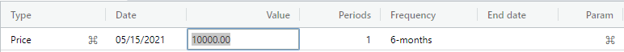
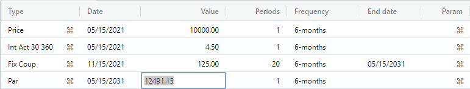

Bond tutorial overview.
This tutorial presents a 10-year bond having a day count basis of 30/360. The bond has semi-annual compounding and pays a fixed semi-annual coupon amount of 125.00. Additionally, a "call" is placed on the bond after 8 years, which shows the value of the bond at that time (i.e., in contrast to the par value at maturity).
Please enter the dates given in this tutorial to avoid any automatic date adjustments (e.g., leap year) that can affect the final cashflow balance.
Note: This tutorial meant is for the default en-US locale. If another locale is chosen, the AmFn Wasm will handle the date format, decimal format, currency format, and spoken language resources for that locale.
Create bond cashflow.
Let's begin by selecting the File -> New Cashflow menu item. A dialog is displayed asking you to enter a cashflow name and select a template for this cash flow. Please enter the name of your cashflow, select "Standard bond", and press the Submit button.
A new cash flow is created with a "Price" event preselected for you. Press the Enter key until you are positioned in the "Date" column and enter 05/15/2021. Next, press the Enter key until you are positioned in the "Value" column and enter 10000 (i.e., i.e., the issue price of the bond is ten thousand). Finally, press the Enter key until you are positioned in the "Frequency" column and select a "6-month" (semi-annual) frequency.

Create interest change.
Press the Enter key until a new interest change event is created. Press the Enter key until you are positioned in the "Value" column and enter 4.5 (i.e., a 4.5 percent interest rate).
Create fixed coupon.
Press the Enter key until a new fixed coupon event is created. 1Press the Enter key until you are positioned in the "Value" column and enter 125 (i.e., one hundred twenty five). Then, press the Enter key until you are positioned in the "Periods" column and enter 20 (i.e., 20 semi-annual periods = 10 years until the bond matures).
Create par event.
Press the Enter key until a new par event is created. Press the Enter key until you are positioned in the "Value" column. Press the "Calculate" button in the lower left side of the cash flow window to apply the balance of 12491.15 to the par event
In the expanded amortization grid, the compounded interest, straight-line interest, and interest-on-interest is displayed for each month of the bond.

Create call value.
Finally, press the Insert button, select Call value, and press the Submit button to create a "Call" event. Press the Enter key until you are positioned in the "Date" column and change the date to two years earlier.
In the Call value event within the lower amortization grid, we can see that the Balance column has a value of 11900.54.